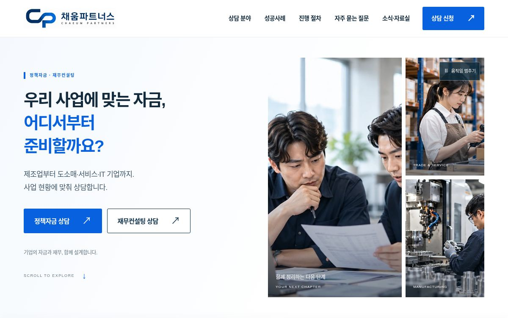
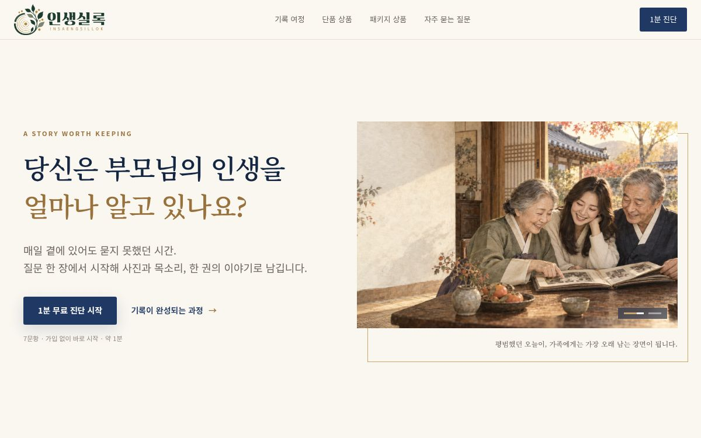
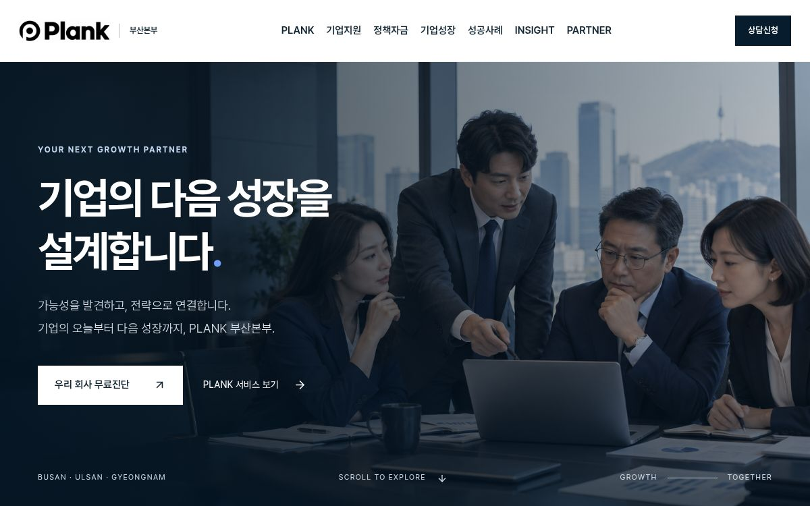

대표 · 임원
CEO플랜과 임원 퇴직금
“제가 갑자기 자리를 비우면 회사 자금은 어떻게 될까요?”
대표 유고 시 당장 필요한 운영자금과 임원 퇴직 시점에 필요한 재원을 나눠 보고, 회사가 각각 어떻게 준비하고 있는지 살핍니다.
기업 대표님의 고민을 듣고,
현장에서 쓸 해법을 만듭니다.
제 전문분야는 기업보험입니다. 부산 해운대 센텀에서 대표와 직원, 공장이 어떤 위험에 대비해야 할지 함께 살핍니다. 로고디자이너로 일했던 경험을 살려, 기업의 자금·인증 상담에서 발견한 불편을 홈페이지와 AI 도구로 풀고 있습니다.
첫 1-2-1 대화 주제법인보험 영업
중소기업 경영 컨설팅
주로 만나는 기업
거래처 대표님에게 이런 말이 들리면
저를 떠올려 주세요.
“제가 갑자기 자리를 비우면 회사 자금은 어떻게 될까요?”
대표 유고 시 당장 필요한 운영자금과 임원 퇴직 시점에 필요한 재원을 나눠 보고, 회사가 각각 어떻게 준비하고 있는지 살핍니다.
“현장 직원이 늘었는데, 새로 온 분도 단체보험에 들어가 있나요?”
현재 직원 명단과 보험 가입 명단을 대조하고, 현장직·사무직의 업무에 맞춰 상해·질병 보장 항목과 한도를 확인합니다.
“공장에 새 기계를 들였는데, 예전에 든 보험은 그대로예요.”
증권에 적힌 사업장 주소와 건물·기계·재고가 실제 현장과 맞는지 살핍니다. 화재로 가동을 멈췄을 때 생길 손실도 함께 점검합니다.
대표님이 어떤 고민을 꺼내시는지에 따라
세 브랜드가 맡는 일이 달라집니다.
“설비를 들이려는데, 우리 자금으로 될까요?”
외부 CFO로서 재무제표와 현금 흐름을 함께 봅니다. 필요한 자금의 용도와 시기를 짚고, 직원 단체보험과 공장화재보험 등 회사가 대비할 위험을 함께 점검합니다.
“우리 기술을 심사에서 어떻게 설명하죠?”
제품과 기술의 차별점, 연구개발·투자 현황을 듣고 적합한 벤처확인 유형을 검토합니다. 이미 가진 증빙과 더 준비할 자료를 함께 정리합니다.
“고객 문의를 매번 손으로 옮겨 적고 있어요.”
고객이 홈페이지에서 무엇을 보고 문의하는지, 직원이 그다음에 어떤 일을 하는지 살핍니다. 필요한 화면과 관리 도구를 작게 만들어 실제 업무에 맞춰봅니다.
화면을 누르면 각 프로젝트를 직접 둘러볼 수 있습니다.

기업 대표가 정책자금 준비 절차를 읽고, 회사 상황에 맞는 상담을 신청하는 페이지입니다.

질문카드를 매개로 부모님의 이야기를 듣고, 사진과 목소리로 가족의 기억을 남기는 서비스입니다.

정부지원사업과 성장지원 분야를 한곳에 모아, 대표님이 필요한 상담을 찾도록 구성했습니다.
상담 현장에서 자주 반복되는 일부터
작은 도구로 옮기고 있습니다.
기업마당 공고를 모으고 업종·지역·규모를 바탕으로 후보를 좁힙니다. 검색 결과에서 상담까지 이어지는 흐름을 다듬고 있습니다.
고객별 관심사와 제안 내용, 다음 미팅에서 확인할 일을 한곳에 기록합니다. 초기 버전은 상담자가 쓰는 기기의 브라우저에 저장합니다.
노션에 정리한 주제를 AI로 짧은 스레드와 카드뉴스 초안으로 바꾸고, 담당자가 표현과 근거를 확인한 뒤 발행하는 과정을 설계하고 있습니다.
영화와 드라마를 좋아하고, 요즘은 AI로 도구를 만들거나 커뮤니티를 키우는 일에 관심이 많습니다. 멤버님은 요즘 어떤 일에 푹 빠져 계세요?
요즘 가장 자주 만나는 고객은 누구이고,
그분들은 어떤 말로 고민을 꺼내시나요?
멤버님의 회사에서 매주 반복하는 일 중
하나만 줄일 수 있다면 어떤 일인가요?
특히 부동산을 보유한 가족법인 대표님을 만나고 싶습니다. “공장을 옮기고 싶다”, “매출은 있는데 돈이 없다”, “자녀에게 어떻게 넘겨줄까” 같은 말이 들리면 저를 떠올려 주세요.
세무사·법무사·변호사, 공장 전문 공인중개사·감정평가사, 은행 PB와 함께 기업의 상황을 살피고 싶습니다. 멤버님은 제가 어떤 분을 만날 때 소개해 드리면 좋을까요?
“기업보험을 하는 이헌영 대표를 소개할게요. 공장을 옮겼거나 직원이 늘었다면 지금 보험이 달라진 회사 상황에 맞는지 같이 봐주는 분이에요. 자금이나 인증, 반복되는 업무를 줄이는 방법도 함께 의논할 수 있어요.”